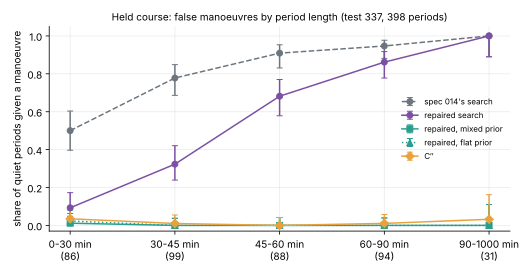
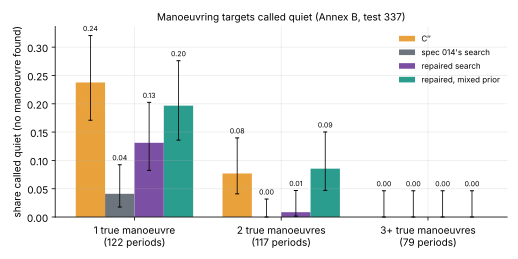
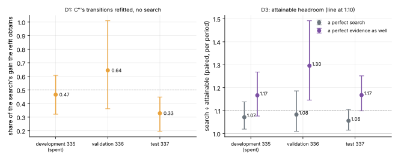
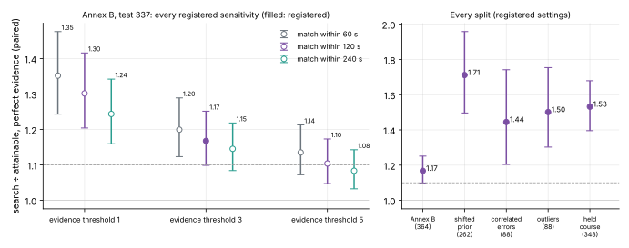

The evidence gave a manoeuvre's duration about 600 s of volume against a density tens of seconds wide.
The classing counted manoeuvres cut by the period's edge.
The true-history reference drifted into other histories in 13% of periods.
Owner's decision: repair, and decide the same quantities again on fresh seeds (336, 337).
Three repairs
Plus: every table generated from the summary by script, after spec 014's hand-copied row.
A target that never manoeuvres

Repaired search 0.53 overall (spec 014's on the same periods 0.80). Short periods: 0.50 to 0.09. Long periods: unchanged, because Annex B says a target probably manoeuvres within the hour.
The repair is not free

One-manoeuvre targets called quiet: 4% before, 13% after, 20% with a stated half chance of a quiet target. Integrated numerically these misses are within a nat of undecidable.
The decided quantities on three seeds

Test seed 337: D1 0.33 [0.20, 0.45]; headroom 1.06 and 1.17 [1.10, 1.25]. The lower limit is 1.099 against a line of 1.10: inconclusive, and by the rule no GPU budget.
The headroom is a convention

1.08 to 1.30 across the registered sensitivities. Large on every split where the simulator's assumptions fail.
What the panel found: the reference decides it
Reference on replaced periods
Headroom
By the rule
Registered (held where it drifts)
1.17 [1.10, 1.25]
inconclusive
Free-time fit throughout
1.15 [1.08, 1.22]
inconclusive
Without held periods
1.13 [1.06, 1.20]
inconclusive
Held periods as no gain
1.11 [1.05, 1.17]
inconclusive
Times held everywhere
1.19 [1.11, 1.28]
material
19 held references carry a third of the gain; ten periods carry over half. A fit told the true times knows more than which history is right. Panel recomputation, not a registered result.
Five approve with findings
Every decided number reproduces; no bug changes one; registration held.
The rule's output is "no GPU budget". Our first record softened it; corrected.
The evidence repair is not finished: the pairing fails at the edges of the prior's support (fifth error of this family).
Short-period 0.09 is not what a correct evidence gives: the prior favours "some manoeuvre" almost everywhere.
"Ambiguous" share is the threshold's: 0.11, 0.44, 0.66 at thresholds 1, 3, 5.
What was not achieved
Each repair's effect on each decided quantity, separated, on the same periods.
Unit tests for the decided statistics' code.
A fall-back that catches runaway refits: it caught one of seven.
A decision at the 10% line: 400 periods cannot make one.
Any remedy for a shifted prior, correlated errors or outliers.
What comes next
A hedged track from the stored candidates; a declaration margin.
Robust and correlated-error likelihoods; a prior that can be wrong; a small stated chance of a quiet target.
Scored where the gaps are: shifted prior 1.7, correlated errors 1.4, outliers 1.5.
Then a learned whole-period model, registered against those controls.
The choice is the owner's; no GPU run before it. Write-up: /blog/2026/11/13/time-late-repair · record: experiments/20261113-tl3 (review.md)